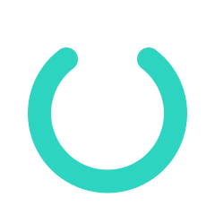

About us
OneClick OS is made by Codecraft Solutions Studio, a small software studio in New South Wales, Australia.
Why we're making it
A lot of good computers are stuck. They can't run the newest Windows, or they run it badly, or their owners are tired of being pushed around by it. Linux could give those computers years more life, but the first hour with most Linux systems is where people give up: too many choices, a terminal, and a game or an app that won't start with no explanation.
We think that first hour is fixable. OneClick OS is our attempt: one system, set up properly before you ever see it, that tells you the truth about what works.
How we work
- We start from complaints. Every feature began as something real people said they hated about switching.
- We say what doesn't work. There is a list of things we can't fix on the Why OneClick page, and a plain status list on the home page.
- We don't collect your data. No account, no tracking. See the Privacy policy.
- You stay in charge. Nothing updates unless you choose it, and you can always go back.
What it's built on
We did not write an operating system from nothing, and nobody does. OneClick OS stands on the Linux kernel, Fedora and KDE Plasma, built by thousands of people over decades and given away freely. Our part is the layer you see and touch: the look, the icons, the start-up, the update system, the names, and the choices made for you. Our own code is open for anyone to read.
The logo


The ring is the O of OneClick, left open at the top, with a single dot above it: one click. It is also the start button on the taskbar.
Get in touch
Email oneclick@codecraftsol.org, or report a problem. You do not need an account for either.